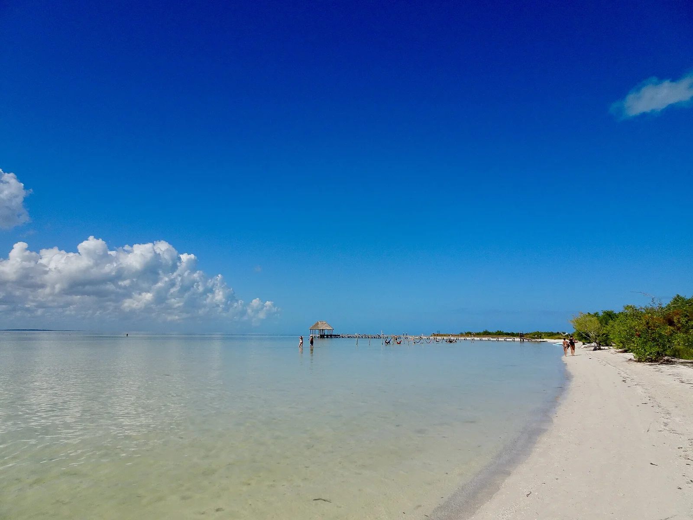

Holbox
Quintana Roo, Mexique · kayak, kitesurf

Au nord du Yucatán, Holbox sépare le golfe du Mexique d’une lagune côtière. L’île se prête à un séjour autour de la plage, du kayak et du kitesurf avec les prestataires locaux.
- Lieu
- Quintana Roo, Mexique
- Niveau
- Variable selon les conditions
- Activités
- kayak, kitesurf
- Type d'eau
- Mer / océan
- Coordonnées
- 21.52, -87.38 (position approximative du secteur)
Ouvrir dans Ocean Buddy Télécharger sur l'App Store
Source : Wikipédia · géographie du lieu.